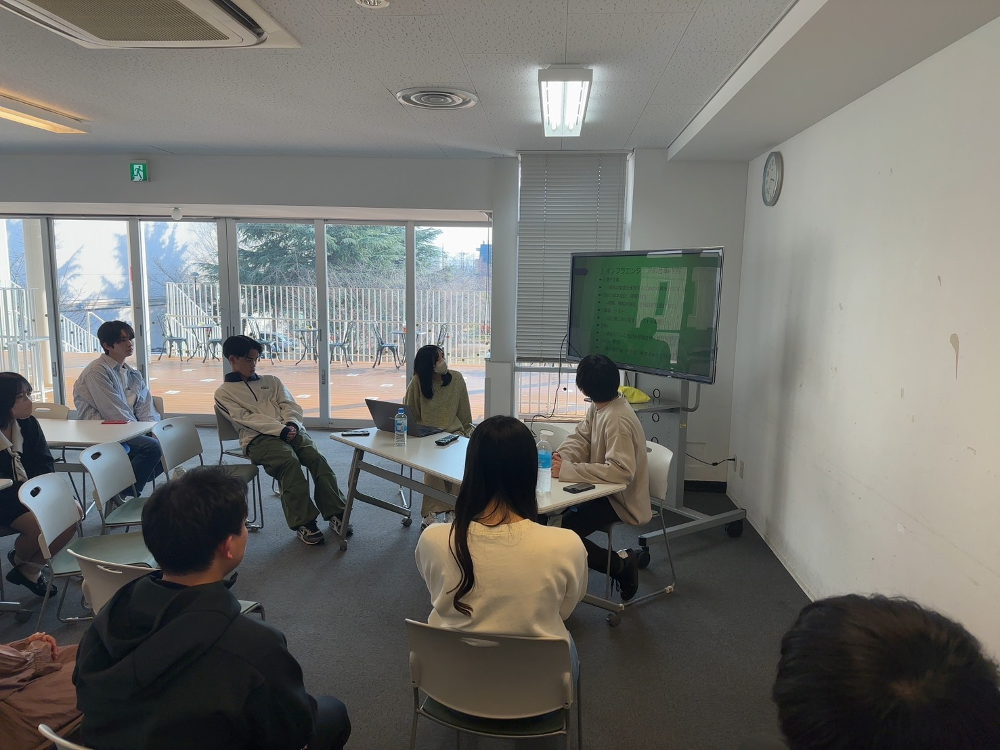
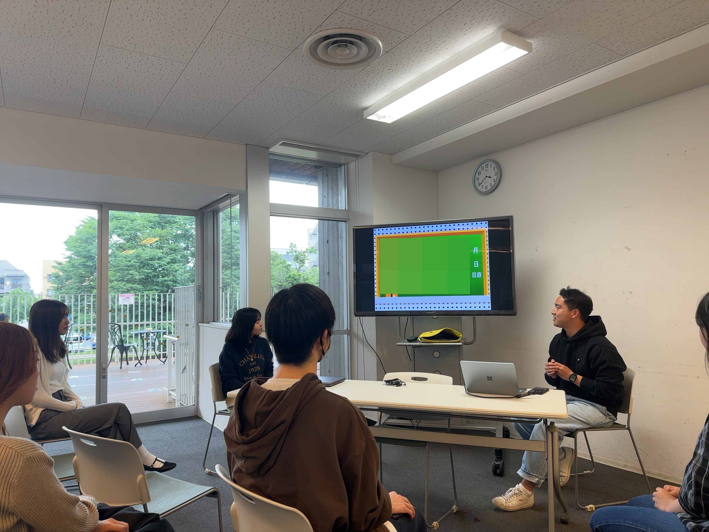
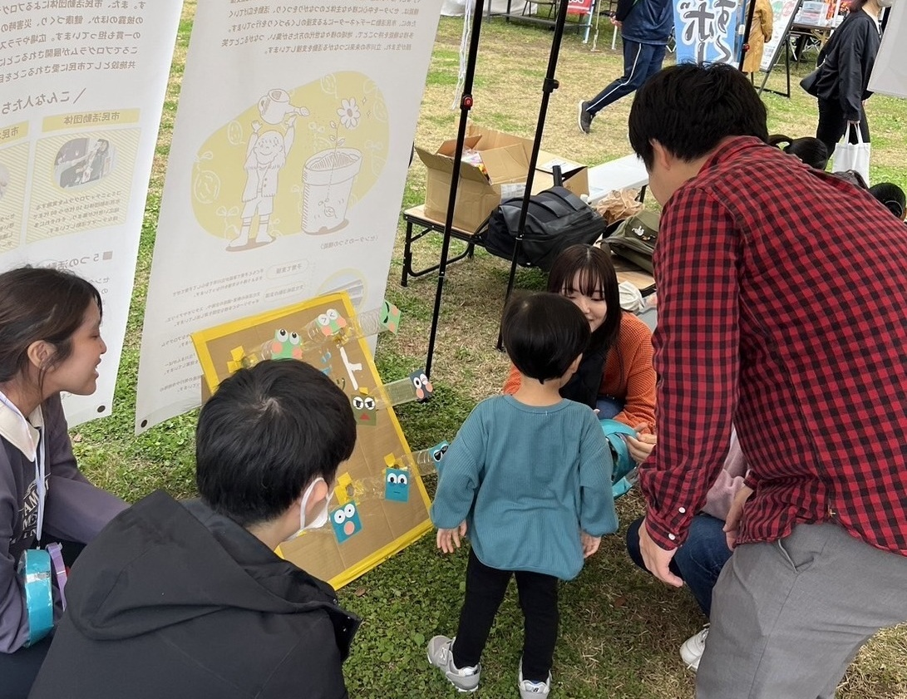

こどもたちに
第3の居場所を
Mission
～こどもたちに第３の居場所を～
すべての子ども・若者に、つながりと学び、そして未来への希望を。
私たちは、家庭や学校だけでは満たしきれない「第3の居場所」を社会に根づかせ、
誰もが尊厳をもって育ち、可能性をひらいていける社会の実現を目指します。
学びを支えること、進路をともに考えること、地域とのあたたかな関係性を築くこと、
それら一つひとつの営みを通じて、子どもたちが未来に向かって自分らしく歩める社会の土台をつくっていきます。
Action
私たちは、すべての子ども・若者が安心して過ごせる「第3の居場所」の創出を通じて、以下の事業を推進します。
学習・教育支援による基礎学力の向上と学びの継続支援
進路・キャリア支援による将来設計の支援および社会的自立の促進
地域と連携した居場所づくりを通じた、コミュニティの活性化と地域包摂の実現
これらの事業を通じて、子ども・若者が持つ可能性を最大限に引き出し、持続可能な社会の構築に寄与します。
小中高校生向けに苦手な教科の克服や定期的な学習の場、テスト・受験対策としてご利用いただけるプログラムです。
英語や算数・数学などを中心に、さまざまな教科に対応いたします。
現役の大学生や塾講師の経験を持つスタッフからアドバイスをもらいながら学習し、苦手な教科の克服や学習の習慣化をしていきませんか？
進路等の悩みがある人・やる気が出ず学習の場が欲しい人も、ぜひご参加をお待ちしています。


受験・就活・留学・教員採用試験等の経験談や大学生活・高校生活・仕事の話などを下の世代に話す機会づくりをしています。
高校生・大学生向けの進路支援も実施しています。

サードコミュニティでは地域の団体などと協力した企画や子どもたちと一緒に楽しめる企画を行っています。
現在は立川市の子ども未来センターのプログラムや児童館での企画に参加しています。
--- News ---
2024年12月10日
特定非営利活動法人サードコミュニティを設立しました。